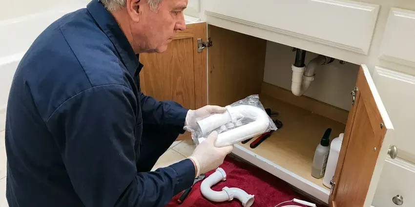

Shower Replacement in Shoreline, WA
When an old shower leaks, scalds or looks tired, it is time to replace it. FHN Plumbing handles shower replacement across Shoreline, WA from valve to drain line.
- Upfront Pricing
- Prompt, Local Service
- Workmanship Guarantee
- Satisfaction Guaranteed

Need Shower Replacement Done Right in Shoreline, WA?
Contact FHN Plumbing today for a consultation and a clear estimate on your shower replacement project.
Professional Shower Replacement in Shoreline, WA
FHN Plumbing replaces worn shower valves, leaking pans, cracked fiberglass units and outdated tile showers. We remove the old components, inspect framing and subfloor for water damage and install new plumbing to current code. Every replacement is pressure-tested before walls are closed.
Our expertise includes:
- Full shower unit removal and disposal
- Full removal and installation of shower units.
- Installation of new shower valves and fixtures

Additional Bathroom Plumbing Services in Shoreline, WA
From toilets to showers, our bathroom plumbing team in Shoreline, WA handles repairs, installs, and upgrades with tidy, code-compliant work.


Customers
Why Choose FHN Plumbing for Shower Replacement in Shoreline, WA?
Our team uses only high-quality materials and proven installation techniques to ensure your new shower not only looks great but also performs reliably for years to come.
- Transparent Pricing, You will receive a clear, upfront estimate before any work begins, with no hidden fees.
- Quality Materials, We use durable, proven brands for long-lasting shower replacements.
- Clean Worksite, Our plumbers respect your home, keeping the work area clean throughout the project.
Citywide Coverage
FHN Plumbing serves every neighborhood across Shoreline, ensuring that no matter where you are located, expert shower replacement services are just a call away. We are committed to bringing reliable plumbing solutions to the entire Shoreline community.
Experienced Team
We have rebuilt showers after leaks caused rot, mold and slab damage. That experience helps us spot problems early and plan the right repair.
Safety-First Approach
Safety and code compliance come first in every shower replacement we take on. We make sure all plumbing connections are secure, water pressure is properly regulated, and drainage systems work properly, meeting all Washington regulations.
Trusted Certified Shoreline Plumbing Services Professionals
At FHN Plumbing, we take pride in providing certified plumbing services throughout Shoreline, WA. Backed by recognized industry credentials, our experienced plumbers combine technical skill with genuine customer care. Whether it is repair, installation, or maintenance, we follow strict safety and quality standards to deliver lasting results you can trust.
Call Us Now PHCC Plumbing Contractor Recognition
PHCC Plumbing Contractor Recognition Better Business Bureau (BBB) Accreditation
Better Business Bureau (BBB) Accreditation Angi Certified Pro
Angi Certified Pro ISO 9001 Quality Management Certification
ISO 9001 Quality Management CertificationTrusted Shower Replacement Services in Shoreline, WA
Replacing Showers for Hard Water Issues in Shoreline, WA
Soft water can be mildly corrosive to copper over time, which sometimes shows up as pinhole leaks in older supply lines. Hard water can cause mineral buildup in showerheads, valves, and on surfaces, leading to reduced water pressure and a dingy appearance. If mineral scale has damaged your shower beyond repair, FHN Plumbing can replace affected components or the entire unit. We can also recommend solutions like water softeners to prevent future issues, helping your new shower in Shoreline, WA keep its performance and looks for years to come.

Tile Shower Replacement in Shoreline, WA
Tile showers can fail when grout cracks or waterproofing breaks down. We handle the plumbing side of tile shower replacement, including valve, drain and pan. We work with your tile installer so waterproofing membranes are installed correctly. Modern systems like Schluter Kerdi are popular choices.
Emergency Shower Leak Solutions in Shoreline, WA
While a full shower replacement is rarely an emergency, a severe leak coming from the shower plumbing can be. If you experience sudden, serious water damage from your shower, FHN Plumbing offers emergency services to isolate the leak and provide temporary or permanent solutions. We can assess if a full replacement is the best long-term fix in Shoreline, WA.
Custom Tile Shower Replacement in Shoreline, WA
For homeowners who want a more personalized look, we offer custom tile shower replacement. This involves expert demolition of the old shower, precise waterproofing of the shower pan and walls, and professional tile installation. Our plumbers make sure of proper slope for drainage and correct installation of fixtures, creating a beautiful and functional space in Shoreline, WA.
Fiberglass Shower Unit Replacement in Shoreline
Older fiberglass and acrylic units can crack, fade and leak at the base. We remove the old unit, check the framing and drain and install a new one-piece or multi-piece unit. Many homes have narrow doorways, so we often use multi-piece units that fit through. The result is a clean, durable shower.
Standard Shower Unit Replacement in Shoreline
When your existing shower unit is old, cracked, or simply outdated, FHN Plumbing offers complete replacement services. We carefully remove the old unit, inspect the subfloor and wall structure for any hidden damage, and install a new, durable shower pan and surround. Our team makes sure of proper sealing and watertight connections to prevent leaks and protect your home from moisture issues. We work with standard-sized units, making the upgrade process quick and straightforward.
Commercial Shower Replacement in Shoreline
FHN Plumbing also provides shower replacement services for commercial properties, including gyms, hotels, and employee locker rooms. We understand the need for durable, high-traffic solutions that comply with commercial plumbing codes and accessibility standards. Our team works efficiently to minimize disruption to your business operations, installing robust shower systems that can withstand heavy use and provide reliable performance for your patrons or employees in Shoreline.

Shower Valve and Fixture Upgrades in Shoreline
Sometimes, a full shower replacement is not needed, but upgrading internal components is. We can replace old, corroded shower valves, diverters, and worn-out fixtures like showerheads and handles during a partial replacement. This improves water pressure, stops drips, and gives your shower a fresh feel without a complete overhaul in Shoreline.
Shower Replacement Near Me in Shoreline, WA
Searching for shower replacement near me in Shoreline? Look no further than FHN Plumbing. Our local teams are positioned to respond promptly to your plumbing needs, providing timely and efficient service right to your doorstep. We are your neighbors, focused on keeping your home comfortable and functional.
When you search for shower replacement near me in Shoreline, WA, FHN Plumbing is the trusted local choice. Our location allows us to respond promptly to your service requests, providing prompt and reliable shower replacement solutions right in your neighborhood. We are committed to serving the entire Shoreline area with professional plumbing expertise.
FHN Plumbing at a Glance
- Licensed and insured plumbers serving Shoreline, WA
- 24/7 emergency service with same-day scheduling
- Clear written estimates, no hidden fees
- 4.9-star rated by 382+ Washington customers
Shoreline Map
Shoreline Information
- Population
- 61,353
- Area codes
- 206/425/564
- Service area
- Shoreline and communities within 40 miles
- Nearby
- Bothell, Kirkland, Seattle, Redmond
Steep slopes and wet soils can shift over time, which stresses buried sewer and water lines and sometimes separates joints. Replacing an old or failing shower in Shoreline, WA is a smart move, since leaks can damage framing and floors and put stress on your foundation.
Expert Services
Trust our professionals for reliable FHN Plumbing solutions in Shoreline, WA.
Our Specialized Plumbing Services in Shoreline, WA
At FHN Plumbing, we provide a complete range of plumbing services across Shoreline, WA. From leak detection to full system installations, our team ensures fast, precise, and affordable service for both residential and commercial properties. Explore our core services below:


How Our Shower Replacement Process Works in Shoreline, WA
Our shower replacement process is designed to be straightforward and stress-free for homeowners in Shoreline, WA.
Request a Quote
Call (425) 491-3131 or fill out our online form to schedule a consultation. We will go over your needs, assess your current shower, and provide a detailed, transparent estimate for the replacement.
Old Unit Removal
Our team carefully removes your old shower unit, fixtures, and any damaged sub-structures. We make sure the area is clean and prepared for the new installation.
New Shower Installation
We install your new shower pan, walls, plumbing fixtures, and enclosure, ensuring all connections are secure and watertight. We test everything carefully before completion.
Frequently Asked Questions About Shower Replacement in Shoreline
The cost of shower replacement in Shoreline, WA can range from $1,500 for a basic unit swap to over $10,000 for custom, tiled walk-in showers with high-end fixtures. Factors like shower type, materials, and plumbing changes affect the final price. We provide detailed estimates after an on-site assessment.
Yes, tub-to-shower conversions are a popular service we offer. This involves removing the existing bathtub and installing a new shower pan, walls, and fixtures in its place. It can greatly improve accessibility and modernize your bathroom's appearance.
Valve and pan replacements may require a permit depending on the city and scope. We check requirements and handle permits when needed.
Shower replacement typically focuses on removing the old shower unit and installing a new one, often within the existing footprint. A shower remodel is a more extensive project that might involve changing the layout, moving walls, or completely redesigning the whole bathroom space around the shower.
Common signs include persistent leaks, extensive cracking or staining on the shower pan or walls, outdated fixtures that constantly drip, or a desire for improved accessibility. If your shower is moldy beyond cleaning or has poor water pressure due to old plumbing, replacement might be the best option.
A valve replacement takes about half a day. A pan replacement may take 2 to 4 days, and a full rebuild with tile can take 1 to 2 weeks.
A standard shower unit replacement can often be completed within 1 to 3 days, depending on the complexity and any unexpected issues. More extensive projects, like custom tiled showers or conversions, may take 3 to 7 days due to material drying times and detailed work.
New valves and fixtures carry manufacturer warranties, often lifetime for the original owner. We guarantee our workmanship on every replacement.
What People Are Saying About Our Plumbing Experts?

Patricia H.
We had a slab leak that two other companies could not find. FHN Plumbing located it in under an hour, explained our options, and the price matched the quote to the dollar.
Slab Leak Repair · Seattle, WA
Robert G.
The trenchless sewer replacement saved our front yard. They walked us through the camera inspection footage first so we knew exactly what we were paying for.
Sewer Line Replacement · Bellevue, WA
Daniel K.
A pipe burst at 11 pm and they actually answered. The plumber showed up within the hour, shut everything down, and had us back to normal the next morning. Could not ask for more.
Emergency Plumbing · Bothell, WA
Sofia M.
Two new toilets installed in one visit, no mess left behind, and the tech even adjusted a faucet he noticed was dripping. Fair pricing and really friendly.
Toilet Installation · Redmond, WA
Mark T.
When our office needed drain cleaning, FHN Plumbing provided quick, reliable service. The plumber arrived on time and made sure every drain flowed perfectly before leaving. Very satisfied.
Drain Cleaning · Bothell, WA
Emily R.
I called FHN Plumbing for plumbing repair, and the technician was fast, polite, and thorough. They explained the problem clearly and fixed it the same day. I will definitely hire them again. Highly recommended!
Plumbing Repair · Bellevue, WA